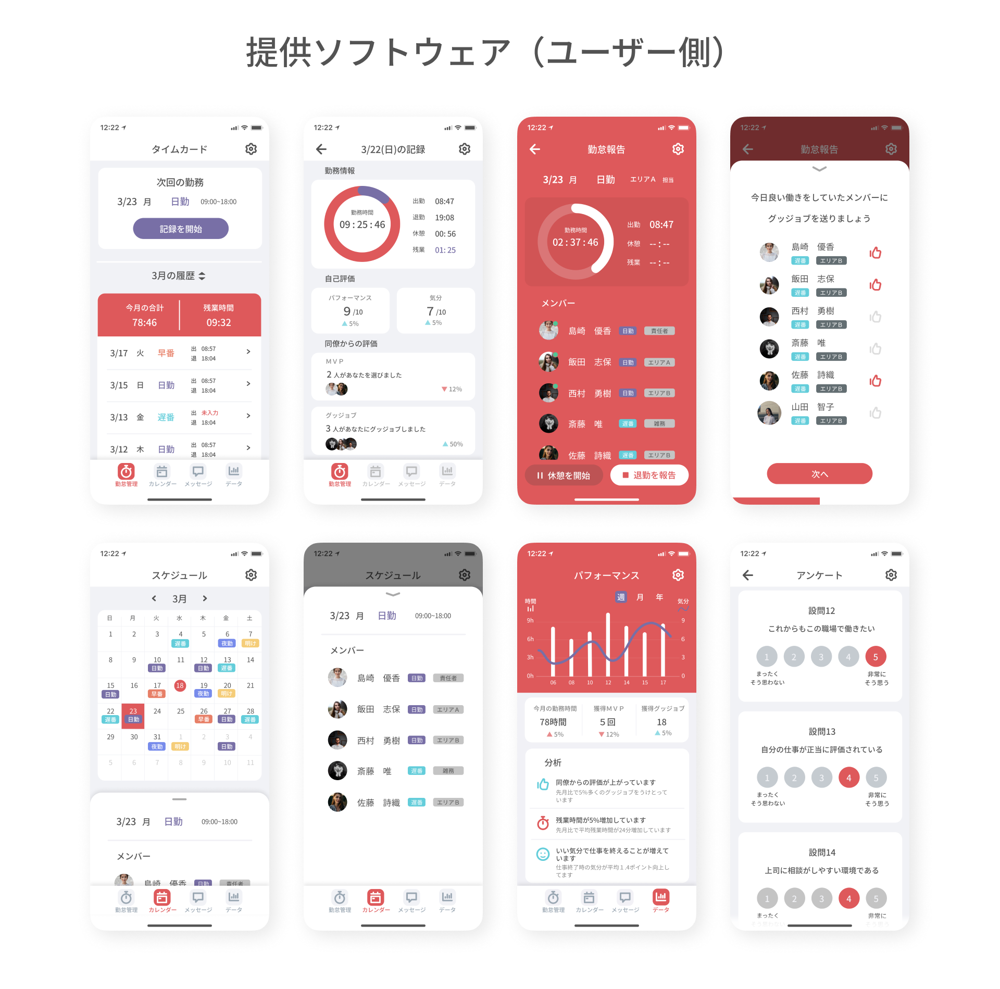
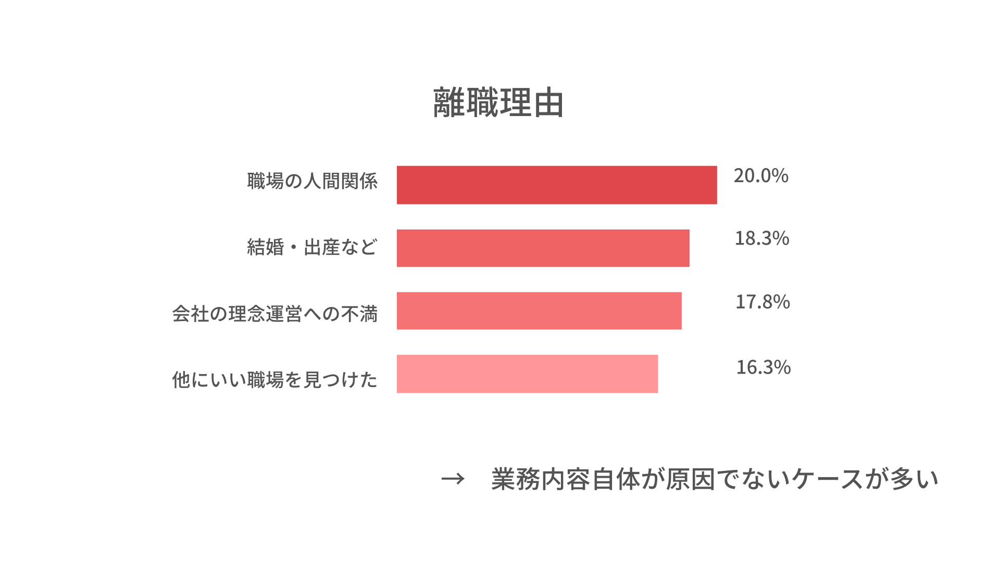
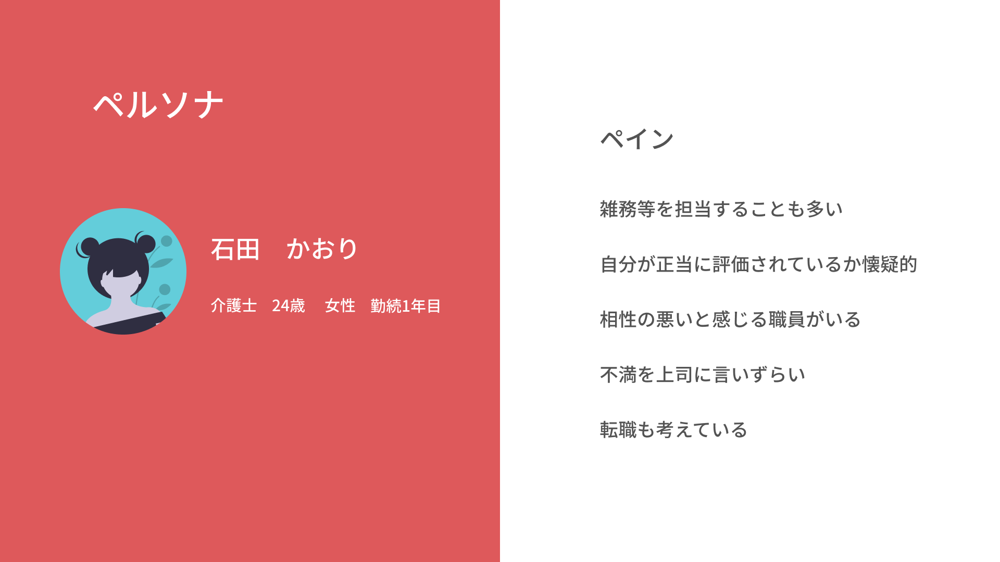
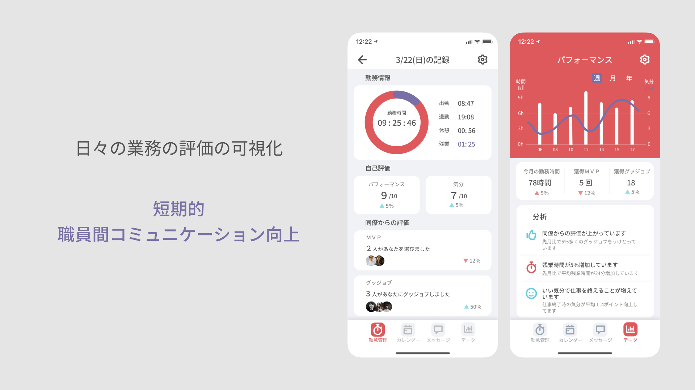
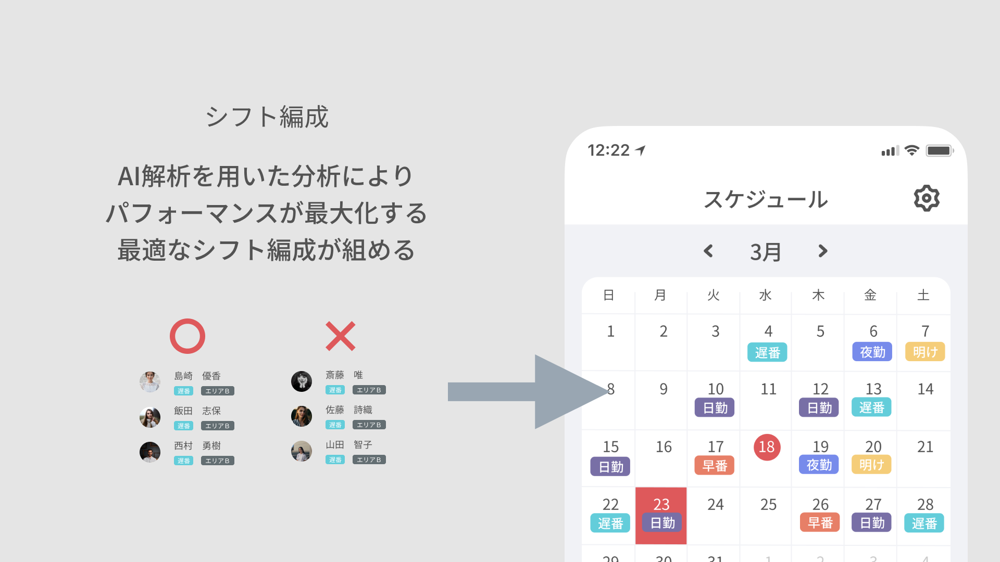
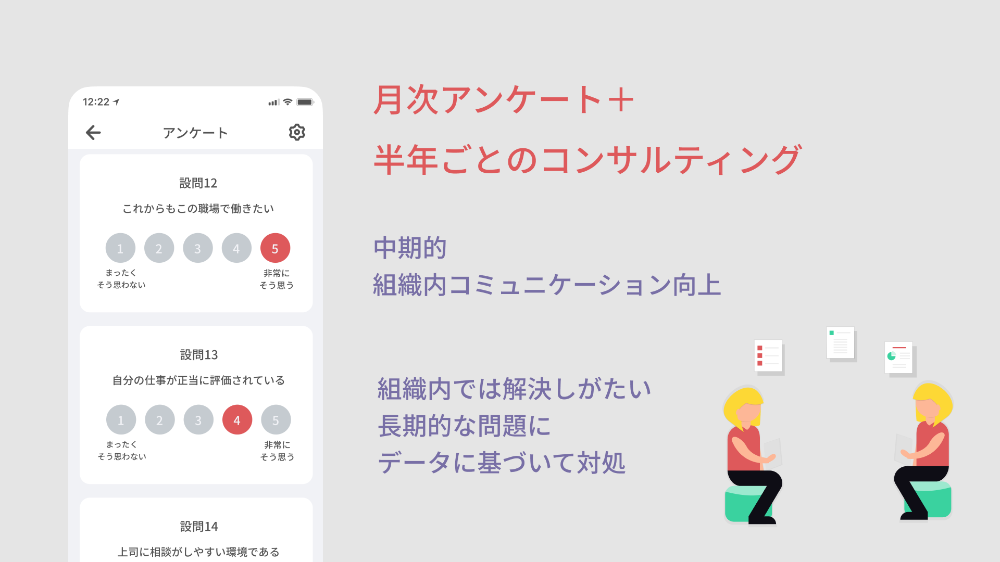
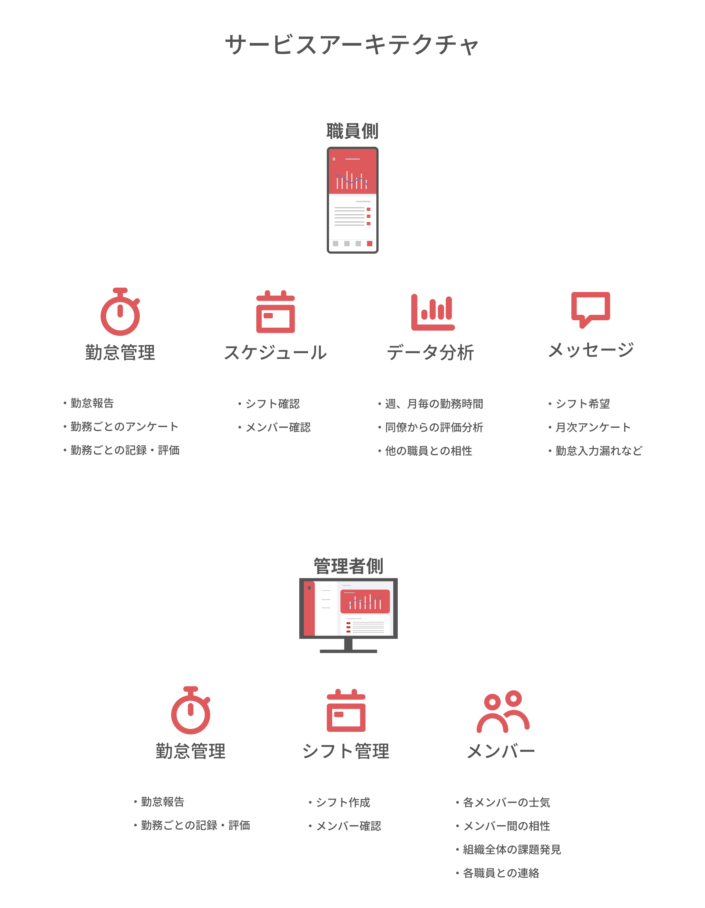

レバレジーズ株式会社のデザイナー採用課題で取り組んだ。課題の内容は以下の通りである。
1. 「介護」業界に関して、日本国内の労働人口の減少による影響と課題を挙げてください
2. 上記で挙げた課題に対して改善策を示し、新規サービス案を提示してください。
今回提案したサービスは介護の現場の人間関係を改善させるための組織コンサルサービスと、組織の状況を把握するためのアンケートや勤怠管理ツールを組み込んだソフトウェア提供を盛り込んだパッケージサービスである。
日本国内の労働人口の減少とともに要介護者の数は増え、介護業界は深刻な人手不足に陥っている。厚生労働省の調査によると、現在すでに66％の介護施設で人手不足が起きている。介護職には３Ｋ（きつい、汚い、危険）などの非常に悪いイメージがついており、労働力の流入が少ないだけでなく、平均の年間離職率が16.2％と非常に高くなっている。このような人手不足のしわ寄せが介護職者にのしかかり、さらに悪い労働環境を生むなど負のサイクルに陥っている。
介護職者の離職理由を見てみると、第一位が人間関係だと答えている。つまり介護職を離れる原因は必ずしも業務内容にあるのではなく、改善可能な要素が支配している可能性がある。しかし、介護の現場、特に人間関係を向上させることを目的とした組織改善サービスなどは既存のものではなく、ビジネスチャンスがある。

今回のプロジェクトのペルソナは若手介護士である。若手は職場で雑用などの仕事を受けることも多く、上司との問題を抱えることも少なくない。実際の離職率も1年未満の人が35％以上、3年未満の人が60％を占めている。
ペルソナが抱える問題は大きく3つ。自分の評価に対する不信感、他職員との相性、組織内での不満の言いずらさである。
これらの問題を解消するための目標は以下のとおりである。
職員間のコミュニケーションを増やし、それぞれの職員が互いに評価しあう空気を作ること。つまり短期的なヨコのコミュニケーションの可視化である。
次に、組織の管理層が組織内の課題をしっかり把握すること。つまり中期的なタテのコミュニケーションの可視化である。
最後に、組織内では発言しにくいことを発言する機会を設けることである。これを実現するために長期的な第三者によるコンサルティングを行う。
短期的にヨコのコミュニケーションを増やすために使用するのが勤怠管理機能である。職員は退勤時に毎日自己の仕事のパフォーマンスとストレスレベル、同僚の仕事のパフォーマンスを回答する。
これらの毎日のアンケートによりほかの職員からどのように評価されているかが可視化される。
また、ユーザーには相性の悪い職員とはなるべく同じシフトに入りたくないというインサイトがあるとわかったため、職員間の相互評価やストレスレベルなどの情報をもとに、最もストレスの少ないシフト編成を半自動的に組むプログラムを組み込むこともできる。
さらに中長期的に組織内の課題を発見し、コミュニケーションを通して解決していくために、月次のアンケートと半年（または3か月）に一度の第三者面談（コンサルティング）を入れることを考えた。
ユーザー（職員）と管理者側それぞれの機能は以下の通りである。
全体のビジュアルは「明るい」、」「やわらかい」、」「洗練された」をキーワードに、チームワークと情熱を連想させる赤をメインカラーに定めた。
今回サービス名に使用したハドルという言葉はもともとアメリカンフットボールの1プレイごとの作戦会議を意味する。介護士を社会の最前線で体を張る存在としてアメフトのラインマンにたとえたためである。ロゴに使用したサインはハドルを召集する際の「トゥース」というハンドサインであり、ここに右肩上がりに指針を指すという意味を重ねた。